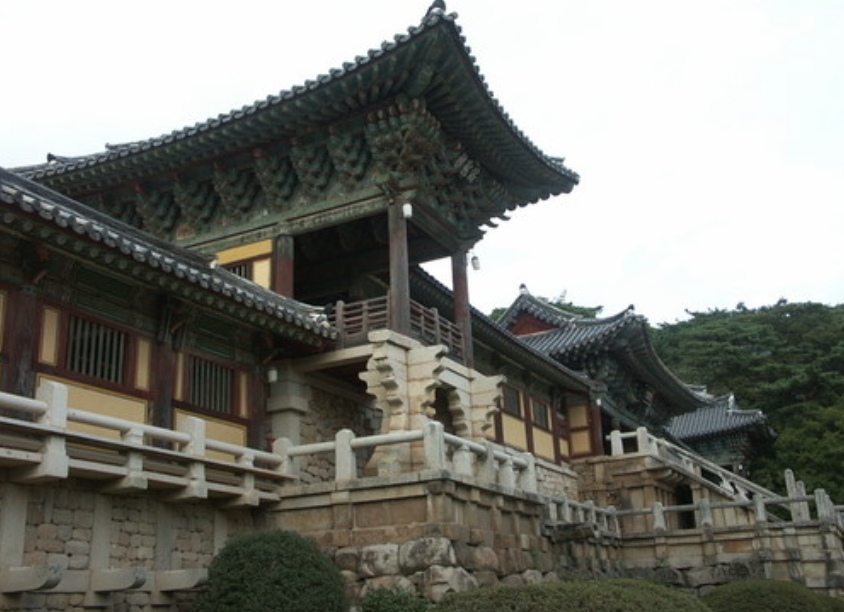
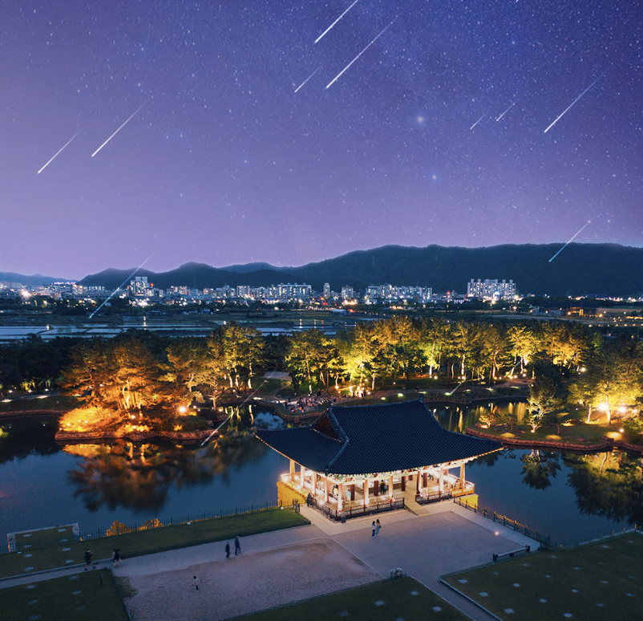

경상북도의 명소
불국사

(경북 경주시 불국로 385 불국사)
대한불교조계종 11교구본사(敎區本寺)의 하나로
그 경내(境內)는 사적 및 명승 제1호로 지정되어 있으며,
1995년 세계문화유산목록에 등록되었다. 경내면적은 11만 7541평이다.
1995년 세계문화유산목록에 등록되었다. 경내면적은 11만 7541평이다.
동궁과 월지
(경북 경주시 원화로 102 안압지)
남북국시대 통일신라의 별궁이 자리했던 궁궐터로 역사적인 곳.
경주의 야경명소로,
달이 비치는 연못이 인상적인 장소
달이 비치는 연못이 인상적인 장소